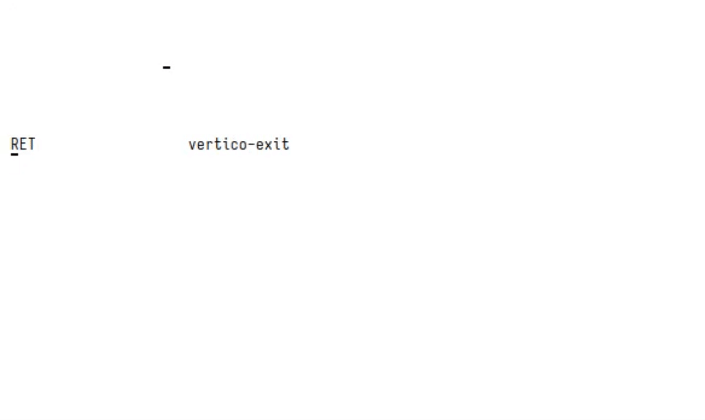

Contents
Emacs is the “extensible text editor”, and it wouldn’t be fun if one didn’t at least try to take advantage of that, right? Having just written a README for my Emacs configuration, I thought it might be nice to somewhat expand on certain ideas and give a little context to some snippets that have accumulated over time.
While there is a post about my version of the
query-replace function, most other tidbits have only seen the light of
day in places like the “Weekly Tips, Tricks, &c.” thread on Reddit. In
the spirit of hosting my content somewhere that I actually control,1
I chose to showcase these again here, hoping that other people may also
find some of this stuff useful.
frame-inhibit-implied-resize¶
This variable is interesting for all the people who, for one reason or another, care about the startup time of their Emacs session. Even more if one uses a tiling window manager, as then Emacs doesn’t get a say in how big its frame will be anyway. An excerpt from the documentation:
Whether frames should be resized implicitly.
If this option is nil, setting font, menu bar, tool bar, tab bar, internal borders, fringes or scroll bars of a specific frame may resize the frame in order to preserve the number of columns or lines it displays. If this option is t, no such resizing is done.
I always wondered why startup time skyrocketed whenever I changed the
default font to something else—surely opening a font and using it can’t
be that expensive! What I didn’t realise was that what I set was
slightly larger than Emacs’s default font, which I reckon was some kind
of monospace fallback on my system. Setting
frame-inhibit-implied-resize to t will thusly prevent Emacs from
trying to—futilely, since I use XMonad—resize its frame in order to
“preserve the number of columns or lines it displays”. The upshot is
that this cuts my startup time from just over 1 second to about 0.8
seconds. This may not seem like much, but it’s literally setting a
single variable in my early-init.el—pretty good
value for money.
pixel-scroll-precision-mode¶
This is pretty old news by now, but I wanted to take the opportunity to
again praise pixel-scroll-precision-mode. My day job is being a PhD
student in maths, which means that I write a lot of
LaTeX and also use Org extensively for taking notes. While ordinary
LaTeX entry in Org works quite well, commutative diagrams are a pain
more often than not. In fact, It’s much easier to draw them with a tool
like quiver, make a screenshot, and then include the resulting picture
in the file. However, now we have the problem that Emacs treats
pictures as very large single characters—the result is a scrolling
experience that’s very far from optimal. This is exactly where
pixel-scroll-precision-mode comes in and saves the day, but see the
difference for yourself:
Quickly Insert images in org-roam¶
Speaking of inserting images into Org; how does one do that, exactly? Doing everything by hand seems like a slog: select an arbitrary rectangle on the screen, take a screenshot of it, move the resulting picture into the correct directory, give it an appropriate name, and insert a link to it into the current buffer. This sounds like a lot of busywork for something that I ideally don’t want to think about at all; thankfully, most of this can be nicely automated.
(defun slot/org-roam-insert-image ()
"Select and insert an image at point."
(interactive)
(let* ((file-name (format "%s-%s.png"
(file-name-sans-extension (buffer-name))
(cl-random (expt 2 31))))
(path (format "%s/%s/%s" org-roam-directory "images" file-name)))
;; The mouse movement via xdotool is needed because otherwise, if
;; unclutter is active, the pointer will remain hidden. Uff.
(call-process "xdotool" nil 0 nil "mousemove_relative" "--" "-1" "0")
(let ((scrot-exit (call-process "scrot" nil nil nil
"-z" "-f" "-s" "--file" path)))
(when (= scrot-exit 0)
(insert (format "[[../images/%s]]" file-name))))))All it needs is xdotool for moving the mouse (though, if you don’t use
unclutter then this may well be deleted) and scrot for actually
taking the screenshot. Pretty convenient. If scrot is too low-tech
for you, then the above snippet probably also works with flameshot or
a similar tool.
LaTeX for the lazy mathematician¶
I am pretty impatient when it comes to LaTeX entry. So impatient that I have created a few “now you’re really taking it too far”-type of functions. To be honest, they kind of delight me.
First, the following is an override for the self-insert-command, which
enables faster entry of one-character math symbols:
(defun slot/LaTeX-self-insert (&optional arg char)
"`self-insert-command' for LaTeX mode.
If the previous word is just a single character, surround it with
dollar signs. If already in math mode, do nothing. If the
character is a single `a', do nothing.
If called with a single \\[universal-argument], just call
`self-insert-command'."
(interactive "P")
(pcase arg
('(4) (self-insert-command 1))
(_ (let ((ppoint (save-excursion (backward-word) (point)))
(ipoint (save-excursion (back-to-indentation) (point)))
(word (word-at-point)))
(unless (or (length> word 1) ; longer than a single character
(not word)
(= ipoint ppoint) ; the first thing on a new line
(equal "a" word)
(number-at-point)
(texmathp))
(-let (((open . close) math-delimiters-inline))
(backward-char)
(insert open)
(forward-char 1)
(insert close)))
(self-insert-command 1 char)))))Bound to <SPC> (and also things like . and -), it enables one to
write "foo T<SPC>" and have Emacs insert "foo $T$ " instead—very
convenient, and much faster even than having a snippet to insert dollars
based on some condition.
The laziness continues with me not wanting to write \blank so
often.2 I could also create an auto-expanding snippet for this, but
wouldn’t it be much better to insert it on a double tap of the space
bar instead? I think so!
(defun slot/LaTeX-space (&optional arg)
"Insert a space; or not.
In case the previous character was already a space, insert
\\blank instead."
(interactive "P")
(if (and (= ?\s (char-before)) (texmathp))
(insert "\\blank ")
(slot/LaTeX-self-insert arg ?\s)))Now, writing something like "C(<SPC><SPC>,<SPC><SPC>)" in math-mode
nicely inserts "C( \blank , \blank )". Because the space bar is so
easy to press, this is again marginally faster than having to write
something like "C(bln,bln)".
Together with auto-expanding snippets, this enables reasonably fast LaTeX entry:

More examples can be found in the post about my research workflow.
ERC¶
I recently switched from WeeChat to ERC for IRC. It’s really great so far, but some things felt a bit lackluster out of the box. As such, my ERC config has already grown quite a bit.3 The following are a few tweaks that improve my experience greatly.
Mark the current frame as urgent¶
One feature I was dearly missing was the ability to set urgency hints in the case I get highlighted/pinged. This is essentially the window telling your window manager or desktop environment that it wants your attention. You can then execute an action based on this urgency hint. Thankfully, Emacs is extensible, so hacking this behaviour into ERC wasn’t actually all that complicated.
(defun slot/mark-emacs-urgent ()
"Mark the current frame as urgent."
(let* ((WM-HINTS "WM_HINTS")
(hints (seq--into-list
;; By default this returns a string/vector.
(x-window-property WM-HINTS nil WM-HINTS nil nil t))))
;; Urgency flag: (1L << 8) == 256
;; Source (as always): https://tronche.com/gui/x/xlib/ICC/client-to-window-manager/wm-hints.html
(setcar hints (logior (car hints) (lsh 1 8)))
(x-change-window-property WM-HINTS hints nil WM-HINTS 32)))
(defun slot/beep-on-match (match-type _nickuserhost message)
"Beep and mark the frame as urgent on highlight."
(let ((visible-bell nil))
(slot/mark-emacs-urgent)
(erc-beep-on-match match-type _nickuserhost message)))
(add-hook 'erc-text-matched-hook #'slot/beep-on-match)And that’s really it! Now ERC correctly sends an urgency hint whenever
I get highlighted. Note that, as we found out, if
you use a reparenting window manager (you probably do if you use a
desktop environment) you might have to give x-change-window-property
above an extra t argument.
Don’t highlight quite so much¶
Having configured quite a few regular expressions for when I get
highlighted, things can get quite overwhelming at times. For example,
when ERC starts up it prints /users in every channel buffer. Of
course, I’m a user in a channel that I’m in, so Emacs happily starts
beeping and throwing around urgency hints—not a good experience. This
also clutters the ERC Keywords buffer (which is built-in and akin to
WeeChat’s highmon.pl).
Thankfully, however, there is a straightforward hack around this: just check the message for certain regular expression first and do nothing when they are present.
(defun slot/erc-ignore-highlight (msg)
"Don't highlight me when these things happen."
(let ((message (s-trim-left msg))
(channel (or (erc-default-target) "")))
(--any? (s-prefix? it message)
`("*** Users on"
"*** Your new nickname is"
"*** Welcome to the"
,(concat "*** " channel ": topic set by")))))All that’s left to do is to thread this function through to
erc-log-matches and the above-defined slot/beep-on-match:
(defun slot/erc-log-matches (match-type nickuserhost message)
"Log matches to extra buffer, unless they are annoying."
(unless (slot/erc-ignore-highlight message)
(erc-log-matches match-type nickuserhost message)))
(defun slot/beep-on-match (match-type _nickuserhost message)
"Beep and mark the frame as urgent on highlight."
(let ((visible-bell nil))
(unless (slot/erc-ignore-highlight message)
(slot/mark-emacs-urgent)
(erc-beep-on-match match-type _nickuserhost message))))
;; As before, now add the appropriate hooks to `erc-text-matched-hook'.If it works, it works, right?
Inserting links¶
Next to being a user, I also spend way too much time working on XMonad. As such, I often help people coming into our IRC or posting on the subreddit with their problems. More often than not one needs to link to the same resources over and over again—why not write something so that I don’t have to dig up these links again and again?
I currently have a set-up where I can link to every XMonad module, all of my blog posts, as well as selected extra sites, like our tutorial and installation instructions. Depending on the given universal argument, a different link style is used, to accomodate for different platforms.
(defun slot/get-xmonad-modules ()
"Get all XMonad modules in the form (NAME . DOC-URL)."
(let* ((xmonad-cabal "~/repos/xmonad/xmonad-contrib/xmonad-contrib.cabal")
(hackage "https://hackage.haskell.org/package/xmonad-contrib/docs/")
(modules (shell-command-to-string
(format "tail -n +50 %s | grep -E \" XMonad\\.*\""
xmonad-cabal))))
(->> (s-lines modules)
(-drop-last 1) ; empty line
(--map (s-trim (s-replace "exposed-modules:" "" it)))
(--map (cons it
(format (concat hackage (s-replace "." "-" it) ".html")))))))
(defun slot/get-posts ()
"Get all of my blog posts in the form (NAME . URL)."
(let* ((website "https://tony-zorman.com/")
(base-path "~/repos/slotThe.github.io/")
(posts (directory-files-recursively (concat base-path "posts/") ".md$")))
(--map (with-temp-buffer
(insert-file-contents-literally it)
(search-forward "title: ")
(cons ; Name . URL
(string-replace "\"" "" (buffer-substring (point) (point-at-eol)))
(concat website (string-trim it base-path ".md") ".html")))
posts)))
(defun slot/often-used-links (&optional arg)
"Choose a link and insert it into the buffer in .md format.
This is quite useful, since many people happen to have very
similar problems when, for example, first starting out with
xmonad."
(interactive "P")
(-let* ((links
(-concat '(("tutorial" . "https://xmonad.org/TUTORIAL.html")
("install" . "https://xmonad.org/INSTALL.html")
("xmonad.hs". "https://gitlab.com/slotThe/dotfiles/-/blob/master/xmonad/.config/xmonad/src/xmonad.hs"))
(slot/get-xmonad-modules)
(slot/get-posts)))
(choice (completing-read "Link: " (mapcar #'car links)))
((name . link) (assoc choice links)))
(insert "[" name "]")
(if arg
(insert "(" link ")")
(save-excursion (insert "\n\n[" name "]: " link)))))I bind this to C-c l in markdown-mode; it looks like this:
A macro for repeat-mode¶
I’ve written a macro for Emacs’s repeat-mode, which allows you to
execute repeated commands without having to press the same prefix over
and over again. For example, one can set this up for Org navigation
commands such that C-c C-n n n executes org-next-visible-heading
three times. A great introduction to repeat-mode can be found
here.
There are lots of packages
around that define different macros which probably work much better than
the one below. Even use-package now sports a :repeat-map keyword
now. However, obviously the one I wrote feels the most natural to me,
so it’s being kept around regardless.
(defmacro defrepeatmap (sym pairs &optional docstring)
"A macro for defining `repeat-map's.
Defines a new repeat-map called SYM with the given DOCSTRING.
The keys are derived via the list PAIRS, whose elements are cons
cells of the form (KEY . DEF), where KEY and DEF must fulfill the
same requirements as if given to `define-key'.
If the key only consists of a single character; i.e., is already
bound and a repeat map is created afterwards, simply add it to
the repeat-map SYM. If not, globally bind KEY to DEF and only
insert the last character of DEF into the repeat map SYM."
(declare (indent 1) (debug t))
`(progn
(defvar ,sym
(let ((kmap (make-sparse-keymap)))
(--each ,pairs
(-let (((key . fun) it))
(if (length= key 1)
(define-key kmap (kbd key) fun)
(bind-key (kbd key) fun)
(define-key kmap (kbd (s-right 1 key)) fun))))
kmap)
,docstring)
;; Tell the keys they are in a repeat map.
(--each (mapcar 'cdr (cdr ,sym))
(put it 'repeat-map ',sym))))The following would, for example, bind mc/mark-next-like-this-word to
M-s s globally and to s in the created mc-repeat-map. Likewise,
mc/mark-next-word-like-this is bound to . in that map, and so on.
(defrepeatmap mc-repeat-map
'(("M-s s" . mc/mark-next-like-this-word)
("C-M-." . mc/mark-next-word-like-this)
("C-M-," . mc/mark-previous-word-like-this)
("C->" . mc/skip-to-next-like-this)
("C-<" . mc/skip-to-previous-like-this))
"`repeat-mode' keymap to repeat `multiple-cursors' bindings.")This may be too implicit for many people, but for me it’s just right—and that’s sort of the point of all of this, right?
I am aware of the futility of this—Reddit is almost certainly going to be around longer than my personal site will. And yet, this feels more correct in some way.↩︎
This is a placeholder that’s often used when not wanting to explicitly quantify over an argument.↩︎
Though it’s still much smaller than whatever it is that WeeChat auto-generates :)↩︎